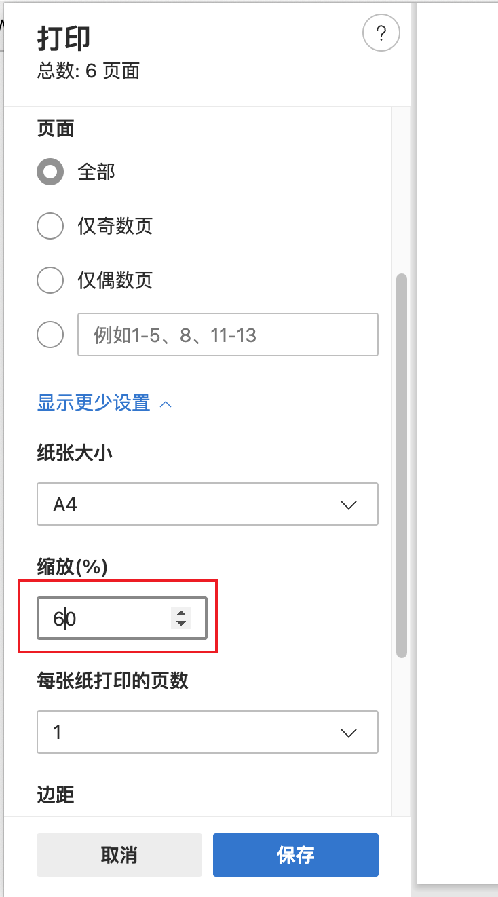

Emacs
Table of Contents
emacs note.
<!– more –>
Base
初始化流程
emacs spacemacs 初始化流程如下 ProcessOn 文件中所述：
./Emacs/emacs initialize.pos

Figure 1: emacs initialize
符号解释
Meta, Super and Hyper are modifier keys that modify the key's function. They are specific to the Symbolics Space Cadet Keyboard used on Lisp machines back in the day. Their function is sometimes emulated using other keys.
C : Control, Hyper M : Meta，通常 Alt 键被当作 Meta 使用 S : Shift s : Super，通常就是键盘上带 Windows 徽章的那个键 Del = Backspace
快捷键规律
1、如果直接输入，键盘上的数字、字母以及符号仅仅插入该字符。 2、常用的函数被绑定到 Ctrl 或者 Meta 键所对应的快捷键上(例如 C-e 到行 尾，C-_ 是撤消，C-y 是粘贴)。 3、如果绑定到前缀 Ctrl 上的函数操作对象是一个字符，那么绑定到前缀 Meta 上的函数对应的的操作对象则是一个词(如果这快捷键有意义的话)。类似的， 如果前缀 Ctrl 对应的快捷键操作对象是一行，那么前缀 Meta 对应的快捷键 将操纵句子。例如：C-t 互换两个字符，而 M-t 互换两个词。C-e 移动到 行尾，而 M-e 移动到句子的尾部。 4、一些不是特别常用的函数绑定到前缀 C-x 上。例如 C-x C-c 退出 Emacs，C-x 2 水平分割当前 window。 5、与某个 mode 相关的的函数被绑定到前缀 C-c 上。 6、最不常用的函数根本没有键绑定，而是使用 M-x 然后输入函数名来调用他们。 7、前缀 C-x 4 被保留作操作另外一个 window 用的函数，例如 C-x 4 C-f 在另 外一个 window 里面打开文件。类似的，C-x 5 被绑定到操纵其他 frame 的 函数上面：C-x 5 C-f 才另外一个 frame 里面打开文件。注意到这两个函数与 C-x C-f (打开文件) 有同样的键绑定，只是在中间插入了 4 或者 5， 这并不是一个巧合。
基本快捷键(Basic)
C-x C-f “find”文件, 即在缓冲区打开/新建一个文件 C-x C-s 保存文件 C-x C-w 使用其他文件名另存为文件 C-x C-v 关闭当前缓冲区文件并打开新文件 C-x i 在当前光标处插入文件 C-x b 新建/切换缓冲区 C-x C-b 显示缓冲区列表 C-x k 关闭当前缓冲区 C-z 挂起 emacs C-x C-c 关闭 emacs
光标移动基本快捷键(Basic Movement)
C-f 后一个字符
C-b 前一个字符
C-p 上一行
C-n 下一行
M-f 后一个单词
M-b 前一个单词
C-a 行首
C-e 行尾
M-a 句首
M-e 句尾
M-{ 段首
M-} 段尾
C-v 向下翻一页
M-v 向上翻一页
M-< 到文件开头
M-> 到文件末尾
编辑(Edit)
- M 对单词操作 C 对字符操作
M-n 重复执行后一个命令 n 次 C-u 重复执行后一个命令 4 次 C-u n 重复执行后一个命令 n 次 C-d 删除(delete)后一个字符 M-d 删除后一个单词 Del 删除前一个字符 M-Del 删除前一个单词 C-k 移除(kill)一行 C-Space 设置开始标记 (例如标记区域) C-@ 功能同上, 用于 C-Space 被操作系统拦截的情况 C-w 移除(kill)标记区域的内容 M-w 复制标记区域的内容 C-y 召回(yank)复制/移除的区域/行 M-y 召回更早的内容 (在 kill 缓冲区内循环) C-x C-x 交换光标和标记 M-Up 向上移动一行内容 M-Down 向下移动一行内容 C-t 交换两个字符的位置 M-t 交换两个单词的位置 C-x C-t 交换两行的位置 M-u 使从光标位置到单词结尾处的字母变成大写(uppercase) M-l 与 M-u 相反(lowercase) M-c 使从光标位置开始的单词的首字母变为大写(capital)
重要快捷键(Important)
C-g 停止当前运行/输入的命令 C-x u 撤销前一个命令 M-x revert-buffer RETURN (照着这个输入)撤销上次存盘后所有改动 M-x recover-file RETURN 从自动存盘文件恢复 M-x recover-session RETURN 如果你编辑了几个文件, 用这个恢复
在线帮助(Online-Help)
C-h c 显示快捷键绑定的命令 C-h k 显示快捷键绑定的命令和它的作用 C-h l 显示最后 100 个键入的内容 C-h w 显示命令被绑定到哪些快捷键上 C-h f 显示函数的功能 C-h v 显示变量的含义和值 C-h m 显示当前缓冲区模式的帮助文档 C-h b 显示当前缓冲区所有可用的快捷键 C-h t 打开 emacs 教程 C-h i 打开 info 阅读器 C-h C-f 显示 emacs FAQ C-h p 显示本机 Elisp 包的信息
搜索/替换(Seach/Replace)
基本操作
- C-s 开始正向查找
- C-r 开始方向查找
这两个命令进入了查找模式，在 Emacs 中的术语叫做 Incremental Search， 也就是在你输入要 查找的字符的时候，同时高亮显示找到的部分。 C-g 回到搜索开始前的位置(如果你仍然在搜索模式中) M-% 询问并替换(query replace) Space 或 y 替换当前匹配 Del 或 n 不要替换当前匹配 . 仅仅替换当前匹配并退出(替换) , 替换并暂停(按 Space 或 y 继续) ! 替换以下所有匹配 ^ 回到上一个匹配位置 RETURN 或 q 退出替换 使用正则表达式(Regular expression)搜索/替换 可在正则表达式中使用的符号: ^ 行首 $ 行尾 . 单个字符 .* 任意多个(包括没有)字符 < 单词开头 \> 单词结尾 \[] 括号中的任意一个字符(例如[a-z]表示所有的小写字母) C-M-s RETURN 使用正则表达式向后搜索 C-M-r RETURN 使用正则表达式向前搜索 C-s 增量搜索 C-s 重复增量搜索 C-r 向前增量搜索 C-r 重复向前增量搜索 M-x query-replace-regexp 使用正则表达式搜索并替换
在查找模式下的一些操作
下面的操作都是先按 C-s 或者 C-r 后， 进入 Incremental Search Mode 之后的操作。
- C-r , C-s， 分别是向前查找和向后查找当前输入的内容。
如果当前内容是空的，也就是说你连续两次输入 C-s，那么就是 “查找下一个 (Find next)”的 操作。第一次是 C-s 把你带入了 Incremental Search Mode， 第二次的 C-s 表示查找上一次查 过的东西。C-r 类似，只不过方向相反。
- C-w 查找光标处所在的单词
例如， 你可以输入 C-r 然后马上输入 C-w， 光标所在位置的单词就自动变成了要查找的内容。 多次输入 C-w 后面的单词就会一个一个 的变成了查找内容一部分。 C-w 还可以和上面介绍的 C-s C-r 配合使用。C-s 进入 Incremental Search Mode. 然后输入 void f 然后光标会停留在一个 void f 的单词上，也许是 void far，然后用 C-s 或者 C-r 找 到某个 void f 的地方，然后 C-w 就可以把 f 后面的单词补全了。
- C-y 把光标所在位置到行尾的部分作为查找内容
和 C-w 类似，只不过输入的不是一个单词， 而是整整一行。
- M-y 把 kill ring 中的东西输入为当前要查找的内容
- M-c 切换大小写敏感。
- M-r 切换是普通查找还是正则表达式查找。
- M-e 编辑要查找的内容
Incremental Search 会随着用户的输入不断的改变光标的位置，有的时候很讨厌，那么就可以 M-e 编辑要查找的内容，然后按 Enter 回到 Incremetal Search。
- M-n M-p 浏览查找历史纪录
可以查找以前 查找过的内容。
- C-q C-j 查找多行文字。
如果你要的查找的内容是多行文字，也就是说，查找内容中含有换行字符 C-j 但是，Enter 键又 作为结束查找的操作，一按 Enter 就退出了查找模式了。那么 C-q C-j 可以解决这个问题。
Frame Window Buffer 命令(Window Commands)
Frame 是指 Emacs 的 GUI 框架，这是平台相关。这里称作窗框。 Window 是指显示 buffer 内容的 GUI 元素。这里称作窗口。 Buffer 是指 emacs 中存放信息的逻辑对象，该信息可以是来自文件，当然也可以不来自文件。例如：*help*缓冲区。这里称作缓冲区。 对缓冲区进行操作 C-x k 删除缓冲区，默认删除当前缓冲区。当前 window 会显示其他缓冲区。 对当前 widnow 进行操作 C-x ^ 扩大窗口 M-x shrink-window 缩小窗口 C-x 0 关闭窗口 C-x 1 关闭除了光标所在窗口外的所有窗口 C-x 2 水平分割窗口 C-x 3 垂直分割窗口 C-x o 切换至其他窗口 C-x 4 0 关闭当前缓冲区和窗口 对其他 window 进行操作 C-x 4 f 在其他窗口中打开文件 M C-v 滚动其他窗口内容 对 frame 进行操作 C-x 5 0 关闭当前窗框 C-x 5 1 关闭除当前窗框外的所有窗框 C-x 5 2 新建窗框(frame) C-x 5 f 在新窗框中打开文件（frame） C-x 5 o 切换至其他窗框(o 即 other)
书签命令(Bookmark commands)
| bookmark-set | 在光标当前位置创建书签 | C-x r m |
| bookmark-jump | 转到书签 | |
| list-bookmarks | 显示 bookmarks 列表 | |
| bookmark-delete | 删除书签 | |
| bookmark-save | 保存书签到默认 bookmark 文件 | |
| bookmark-write | 将所有书签导出至指定文件 | |
| bookmark-load | 从指定文件导入书签 |
d 标记等待删除 Del 取消删除标记 x 删除被标记的书签 r 重命名 s 保存列表内所有书签 f 转到当前书签指向的位置 m 标记在多窗口中打开 v 显示被标记的书签(或者光标当前位置的书签) t 切换是否显示路径列表 w 显示当前文件路径 q 退出书签列表
Shell
M-x shell 打开 shell 模式 C-c C-c 类似 unix 里的 C-c(停止正在运行的程序) C-d 删除光标后一个字符 C-c C-d 发送 EOF C-c C-z 挂起程序(unix 下的 C-z) M-p 显示前一条命令 M-n 显示后一条命令 C-c C-x 执行当前缓冲区的脚本
Telnet
M-x telnet 打开 telnet 模式 C-d 删除后一个字符或发送 EOF C-c C-c 停止正在运行的程序(和 unix 下的 C-c 类似) C-c C-d 发送 EOF C-c C-o 清除最后一个命令的输出 C-c C-z 挂起正在运行的命令 C-c C-u 移除前一行 M-p 显示前一条命令
Text
只能在 text 模式里使用 M-s 使当前行居中 M-S 使当前段落居中 M-x center-region 使被选中的区域居中
宏命令(Macro-commands)
C-x ( 开始定义宏 C-x ) 结束定义宏 C-x e 运行最近定义的宏 M-n C-x e 运行最近定义的宏 n 次 M-x name-last-kbd-macro 给最近定义的宏命名(用来保存) M-x insert-kbd-macro 将已命名的宏保存到文件 M-x load-file 载入宏
编程(Programming)
M C- 自动缩进光标和标记间的区域 M-m 移动光标到行首第一个(非空格)字符 M-^ 将当前行接到上一行末尾处 M-; 添加缩进并格式化的注释 comment-region uncomment-region 命令用来注释代码 C, C++和 Java 模式 M-a 移动光标到声明的开始处 M-e 移动光标到声明的结尾处 M C-a 移动光标到函数的开始处 M C-e 移动光标到函数的结尾处 C-c RETURN 将光标移动到函数的开始处并标记到结尾处 C-c C-q 根据缩进风格缩进整个函数 C-c C-a 切换自动换行功能 C-c C-d 一次性删除光标后的一串空格(greedy delete) 为了实现下面的一些技术, 你需要在保存源代码的目录里运行”etags *.c *.h *.cpp”(或者源代码的其他的扩展名) M-.(点) 搜索标签 M-x tags-search ENTER 在所有标签里搜索(使用正则表达式) M-,(逗号) 在 tags-search 里跳至下一个匹配处 M-x tags-query-replace 在设置过标签的所有文件里替换文本
GDB(调试器)
M-x gdb 在另一个的窗口中打开 gdb
版本控制(Version Control)
C-x v d 显示当前目录下所有注册过的文件(show all registered files in this dir) C-x v = 比较不同版本间的差异(show diff between versions) C-x v u 移除上次提交之后的更改(remove all changes since last checkin) C-x v ~ 在不同窗格中显示某个版本(show certain version in different window) C-x v l 打印日志(print log) C-x v i 标记文件等待添加版本控制(mark file for version control add) C-x v h 给文件添加版本控制文件头(insert version control header into file) C-x v r 获取命名过的快照(check out named snapshot) C-x v s 创建命名的快照(create named snapshot) C-x v a 创建 gnu 风格的更改日志(create changelog file in gnu-style)
Debug
Debugger
Emacs 出错 Debug
emacs --debug-init
在 emacs 中执行以下命令，开启出错 Debug.
M-x toggle-debug-on-error
debugger commands
| Command | 说明 |
|---|---|
| c | 继续执行 相当于 step over |
| d | 相当于 step into |
| e | 对指定变量进行求值 |
| q | 退出 debug |
Tips:
- 进入 debug buffer 后，可以开启自动换行，方便查看函数参数内容。
dubug function
M-x debug-on-entry 输入需要 debug 的函数名称，进行 debug
M-x cancel-debug-on-entry 取消对指定函数的 debug
Plugin
normal usage
| 快捷键 | 说明 |
|---|---|
| M-g g | goto-line |
| emacs -q | 不加载配置文件启动 emacs |
| Esc x | 在命令行模式下调用 M-x (可以设置 Terminal alt 键转化为 Esc 键 |
| M-> | 到达文件末尾位置 |
| M-< | 到达文件起始位置 |
package
安装插件： 运行命令 M-x package-list-packages，会列出所有可下载的插件。选择插件，会有 Install 提示。 卸载插件： M-x package-list-packages C-s need-remove-package mark the package for deletion by typing D execute by typing x 插件加载： 1 直接加载 需要写文件的完整路径 (load-file "elisp-file-path") 2 require 方式加载 不需要对每个需要加载的 plug 都指定完整的路径 (provide 'my-plug) (require 'my-plug) (add-to-list 'load-path "my-plug-dir") 3 autoload 方式加载 指定调用某个函数时先加载对应的文件。只用调用该函数的时候才真正加载该函数。否则指定定义一个空的该函数。 eval-after-load 用于加载完某个插件后的初始化 (autoload 'some-function "function-file-path") (eval-after-load 'my-plug '(progn ...))
dired
一些常用的命令
和文件一样打开目录或通过 C-x d 都可以进入目录的 Dired 缓冲中。这里是打开 Dired-x 之后默认的绑定。说明后面[]中的符号的意义： [*] 作用在已标记的所有文件(目录)或光标所在当前文件(目录)上。 [p] 用前缀参数表示文件个数，从当前文件开始，正数向下、负数向上。 [u] 用前缀参数改变默认行为。对于设置标记的命令一般变为去掉标记。 [x] 需要加载 dired-x。
查看帮助
? 简单帮助 h 模式帮助
移动光标
n, p, SPC 上、下移动光标 [p]
C-n, C-p 上、下移动光标 [p]
M-{, M-} 已标记的文件之间移动 [p]
C-M-p, C-M-n 缓冲中的子目录间移动 [p]
<, > 缓冲中的目录行间移动 [p]
C-M-u 缓冲中的目录树上移动 [p]
M-g 光标移动到某个文件上
M-G 光标移动到某个缓冲中的子目录上，(用 i 插入的)
标记文件
m 标记文件，下移一行 [p] u 去掉标记，下移一行 [p] U 去掉缓冲中所有的标记 M-Backspace 去掉缓冲中所有的某个标记，缺省为 * 标记 Backspace 并去掉上一行标记，并上移一行 [p] t 标记/未标记互换 D 删除所有标记的文件/目录 [*] d 设置“删除标记”（字符 D），并且光标下移一行 [p] x 删除用 d 标记的文件/目录 ~ 将缓冲中备份文件做删除标记 [u] & 没用的文件，做删除标记 # 将缓冲中自动保存的文件做删除标记 [u] . 按备份文件版本，将备份文件做删除标记 [u] % g 标记所有“含有”regexp 的文件 [u] \* * 标记所有可执行文件 [u] \* . 标记所有同扩展名文件 [ux] \* / 标记所有目录 [u] \* @ 标记所有符号连接 [u] \* c 改变标记的符号 % d 通过匹配 regexp 标记删除 % m 通过匹配 regexp 标记 [u]
复制、移动、创建 文件或目录以及连接
C-x C-f 创建文件 + 创建目录 R 文件的重命名/移动 [p*] C 复制文件 [*] S 创建文件的 Symbol link (绝对路径) [p*] Y 创建文件的 Symbol link (相对路径) [px*] H 创建文件的 Hard link [p*] % C 复制匹配 regexp 的文件 [p*] % S 创建匹配 regexp 的 Symbol link (绝对路径) [p*] % Y 创建匹配 regexp 的 Symbol link (相对路径) [p*] % H 创建匹配 regexp 的 Hark link [p*]
修改文件名、属性
M 修改文件 rwx 权限属性 [*] G 修改文件 Group 属性 [p*] O 修改文件 Owner 属性 [p*] T 修改文件的时间戳 [p*] % l 文件名逐一改为小写 [p*] % u 文件名逐一改为大写 [p*] % R, % r 重命名/移动匹配 regexp 的文件 [p*]
访问文件，目录
e, f, RET 打开文件或目录 a 打开文件或目录，并替换当前缓冲 v 使用 view 模式查看文件，q 退出，有些文件使用外部查看程序调用 o 另一个窗口中，打开文件或目录 C-o 另一个窗口中，打开文件或目录，但当前窗口不变 F 打开(多个)文件 [x*] I 使用 Info 模式查看文件 N 使用 man 模式查看文件，若有前缀参数，提示输入处理命令 [ux*] V 使用 RMAIL 模式查看文件 [x] ^ 访问目录的父目录，若有前缀参数在另外的窗口中打开 [u]
在文件夹中搜索替换字符串
首先：执行 Alt+x dired 进入 dired 缓冲区 其次：选中需要搜索的文件夹，按 m 键进行标记 然后：执行 dired-do-find-regexp (按 A 键)进行搜索，执行 dired-do-query-replace-regexp(按 Q 键) 进行搜索替换
退出
q 退出缓冲，若有前缀参数则关闭缓冲 [u]
隐藏/刷新缓冲中内容
s 互换缓冲中“文件名/时间”排序 [u] C-u s 修改传递给 ls 的参数，即修改每行的内容 i 把当前行的子目录插入缓冲中 M-o 隐藏/显示部分次要文件，使缓冲更简便，若有前缀参数标记隐藏的文件 [ux] $ 隐藏/显示当前目录中内容 [p] M-$ 隐藏/显示缓冲中所有目录内容 k 隐藏文件，按 g 可以再显示出来 [p*] l 刷新缓冲文件 [p*] g 刷新缓冲所有文件 C-/, C-_, C-x u dired 模式的 undo
其他
= 比较文件 M-= 文件和备份之间比较，若有前缀参数，提示输入 diff 选项 [u] w 复制文件名到 kill-ring [p*] Z 压缩/解压缩文件 [p*] X 在文件上执行 shell 命令 [p*] B 编译(Emacs Lisp)文件 [p*] L 加载(Emacs Lisp)文件 [p*] y 给出文件类型信息 (通过 file 命令) P 打印文件 [p*]
dired-x.el 中的其他有用的函数
dired-mark-extension 按后缀标记 dired-flag-extension 按后缀标记删除 dired-clean-patch 标记删除 patch 文件 dired-clean-tex 标记删除 tex 编译文件 dired-very-clean-tex 标记删除 tex 编译文件 dired-jump 跳转到当前缓冲所在目录 dired-jump-other-window 在另一个窗口中跳转到当前缓冲所在目录 dired-omit-here-always 在当前目录生成 .dired 文件
vc-mode
运行命令 ctrl+x v d，会进入 vc-dired buffer Revert 改变 ctrl+x v u 执行 vc-revert
helm
- 光标移动操作
| 快捷键 | 说明 |
|---|---|
| C-n | 移动到下一个 |
| C-p | 移动到前一个 |
| C-v | 移动到下个分页的第一个 |
| M-v | 移动到上个分页的第一个 |
| M-< | 移动到最上面 |
| M-> | 移动到最下面 |
spacemacs 下 M-SPC 可以进入光标移动模式，之后用 j k 移动光标
- 选中操作
| 快捷键 | 说明 |
|---|---|
| M-a | 选中当前列表中的所有 buffer |
| C-SPC | 选中光标所在项目 |
- 杂项
| 快捷键 | 说明 |
|---|---|
| C-t | 切换 helm buffer 位置 |
| M-D | 关闭所有选中的 buffer |
| C-c C-i | 将选中的项目插入到 buffer 中 |
| C-z | helm-select-action 显示并选择 helm 中执行的预制命令 |
| C-i | helm-execute-persistent-action 在 helm 中执行预制的命令 |
- 功能快捷键
| 默认快捷键 | Spacemacs 快捷键 | 说明 |
|---|---|---|
| prefix + C-c SPC | SPC r m | helm-all-mark-rings 显示 all mark 列表 |
| prefix + M-y | SPC r y | 显示 kill ring 列表 |
ergoemacs
C-. Quit
yasnippet
snippet 目录
snippet 目录名称必须是模式的全名
lua-mode // 这是可以的 lua // 这是不可以的
多个模式共享 snippet
可以通过.yas-parents 来在多个模式中共享 snippet
auctex
// 安装 auctex M-x list-packages mark auctex for installation with i hit x execute installation procedure
spacemacs
spacemacs-doc
normal usage
selected
SPC-v 可用来选中一个单词、一句话、一段话 v $ 选中当前字符到当前行尾的字符 v 0 选中当前字符到当前行首的字符 Ctrl-v 开启列选中
editing
在 normal 模式下：
| 快捷键 | 说明 |
|---|---|
| c | 修改 |
| C | 修改到行末尾 |
| d | 删除 |
| D | 删除到行末尾 |
| y | 复制 |
| Y | 复制到行末尾 |
| p | 粘贴到当前光标位置之后 |
| P | 粘贴到当前光标位置之前 |
| r | 替换一个字符 |
| R | 替换几个连在一起的字符 |
| SPC-x-d-w | 删除空格 |
| < | 减少缩进 |
| > | 增加缩进 |
| SPC j | indent-region-or-buffer 自动化缩进 |
| SPC ; | 注释或取消注释 |
| SPC c l | 注释或取消注释一行 |
| SPC c p | 注释或取消注释一段 |
| gu/gU | 大小写转换 |
| ddp | 交换两行 |
| u | undo 前一次修改 |
| Ctrl-r | redo 前一次修改 |
| SPC i s | 插入 snippet |
| SPC-s-e or M-x iedit-mode | 选中文本，按该快捷键进入 iedit 模式，进行修改 |
在 insert 模式下：
| 快捷键 | 说明 |
|---|---|
| Ctrl-y | 复制上一行相同位置的字符 |
| Ctrl-e | 复制下一行相同位置的字符 |
| Ctrl-t | 增加缩进 |
| Ctrl-d | 减少缩进 |
| Ctrl-o | 下一个 normal 模式的命令结束后回到 insert 模式 |
| Ctrl-f | 先前移动光标 |
| Ctrl-b | 先后移动光标 |
| Alt-f | 先前移动光标到下一个单词 |
| Alt-b | 先后移动光标到下一个单词 |
在 visual 模式下
| 快捷键 | 说明 |
|---|---|
| SPC-s-e or M-x iedit-mode | 进入 iedit 模式，进行修改 |
move cursor
h j k l 左下上右移动光标
0 移动到行首
$ 移动到行尾
Ctrl-b 向上翻一屏
Ctrl-f 向下翻一屏
Ctrl-u 向上翻半屏
Ctrl-d 向下翻半屏
H M L 将光标移动到屏幕 高 中 底部
`` 回到光标的上一个位置
123G / 123gg / :123
移动到 123 行
SPC SPC avy goto char
SPC y avy goto line
move screen
z ENTER 保持光标位于滚动屏幕顶部 z - 保持光标位于滚动屏幕底部 z . 保持光标位于滚动屏幕中部 SPC t - 保持光标位于屏幕中间
frame and window manager
| SPC F n | new a frame | |
| SPC F b | switch to buffer in other frame | 切换到其他 frame 的某个 buffer |
| SPC F d | delete current frame | 删除当前 buffer |
| M-0 | jump to Treemacs Window | |
| M-1 | jump to window 1 | |
| SPC w / | split window right | |
| SPC w - | split window blow | |
| SPC w W | ace jump window | |
| SPC w K | move window very top | |
| SPC w J | move window very bottom | |
| SPC w H | move window very left | |
| SPC w L | move window very right |
move window
SPC w J window move down SPC w K window move up SPC w H window move left SPC w L window move right
search find
在 normal 模式下
| 命令 | 说明 |
|---|---|
| \* | 向前搜索当前光标处的单词 |
| \# | 向后搜索当前光标处的单词 |
| \/ | 开启搜索，输入需要搜索的文字 |
| SPC / 或 SPC * | 智能搜索光标处的文字 helm-projectile-grep-or-ack |
| SPC-s-j | 列出文件中的所有变量和函数 helm-semantic-or-imenu |
| SPC-s-s | 开启 helm-swoop 搜索 |
| SPC-s-b | 在打开文件中搜索 |
replace
emacs 方式
C-r 或 C-s 进入搜索模式
M-% 进入替换 SPC 表示替换当前光标处 !表示替换所有
vim 方式
- 命令说明
:[addr]s/源字符串/目的字符串/[option]
- [addr] 表示检索范围，省略时表示当前行。
如： “1,20” ：表示从第 1 行到 20 行； “%” ：表示整个文件，同“1,$”； “.,$” ：从当前行到文件尾；
- s : 表示替换操作
- [option] : 表示操作类型
如： g 表示全局替换; c 表示进行确认 p 表示替代结果逐行显示（Ctrl + L 恢复屏幕）； 省略 option 时仅对每行第一个匹配串进行替换； 如果在源字符串和目的字符串中出现特殊字符，需要用”\”转义
- [addr] 表示检索范围，省略时表示当前行。
- 实例
#将 PureMVC_img换成PureMVC :%s/PureMVC_img/PureMVC/g #将 That or this 换成 This or that :%s/\(That\) or \(this\)/\u\2 or \l\1/ #将句尾的 child 换成 children :%s/child\([ ,.;!:?]\)/children\1/g #将 mgi/r/abox 换成 mgi/r/asquare :g/mg\([ira]\)box/s//mg//my\1square/g <=> :g/mg[ira]box/s/box/square/g #将多个空格换成一个空格 :%s/ */ /g #使用空格替换句号或者冒号后面的一个或者多个空格 :%s/\([:.]\) */\1 /g #删除所有空行 :g/^$/d #删除所有的空白行和空行 :g/^[ ][ ]*$/d #在每行的开始插入两个空白 :%s/^/> / #在接下来的 6 行末尾加入. :.,5/$/./ #颠倒文件的行序 :g/.*/m0O <=> :g/^/m0O #寻找不是数字的开始行,并将其移到文件尾部 :g!/^[0-9]/m$ <=> g/^[^0-9]/m$ #将文件的第 12 到 17 行内容复制 10 词放到当前文件的尾部 :1,10g/^/12,17t$ ~~~~重复次数的作用 #将 chapter 开始行下面的第二行的内容写道 begin 文件中 :g/^chapter/.+2w>>begin :/^part2/,/^part3/g/^chapter/.+2w>>begin :/^part2/,/^part3/g/^chapter/.+2w>>begin|+t$
folder
在 normal 模式下
z a 折叠或打开当前所在区域 z o 打开当前区域 z c 折叠当前区域 z r 打开所有 z m 折叠所有
misc
| 快捷键 | 命令 | 说明 |
|---|---|---|
| SPC-b-h | spacemacs/home | 显示 spacemacs home buffer |
| recentf-cleanup | 清除 recent file list | |
| show-paren-mode | 高亮匹配的括号 |
file dir operation
文件编码
| describe-current-code-system <RET> | 查看当前文件编码 |
| revert-buffer-with-coding-system | 以指定编码重新加载文件 |
| set-buffer-file-coding-system | 改变当前文件的编码 |
file compare
| M-x ediff-buffers <RET> | 对比 buffers |
进入比较模式以后，输入“？”会显示命令的帮助信息
find/open file dir
file
dir
| 快捷键 | 说明 |
|---|---|
| SPC-a-d | 打开当前文件所在的目录 |
| SPC-p-D | 打开 project 的跟目录 |
| SPC-p-d | 打开当前文件所在的目录 |
| SPC-p-p | 切换 project |
get file path
SPC-f-y show and copy cur file abs path
find text in multi files
tags
| Key Binding | cmd | Description |
|---|---|---|
SPC m g c |
helm-gtags-create-tags | create a tag database |
SPC m g f |
helm-gtags-find-files | jump to a file in tag database |
SPC m g g |
jump to a location based on context | |
SPC m g G |
jump to a location based on context (open another window) | |
SPC m g d |
find definitions | |
SPC m g i |
present tags in current function only | |
SPC m g l |
jump to definitions in file | |
SPC m g n |
jump to next location in context stack | |
SPC m g p |
jump to previous location in context stack | |
SPC m g r |
find references | |
SPC m g R |
resume previous helm-gtags session | |
SPC m g s |
select any tag in a project retrieved by gtags | |
SPC m g S |
show stack of visited locations | |
SPC m g u |
helm-gtags-update-tags | manually update tag database |
| 快捷键 | 说明 |
|---|---|
| helm-gtags-find-tags 查找 tags | |
| helm-gtags-find-symbols 查找符号 | |
| helm-gtags-dwim | |
| SPC p g | projectile-find-tag |
| SPC p G | projectile-regenerate-tags |
grep
| 快捷键 | 说明 |
|---|---|
| SPC f g == rgrep | 在指定的路径及其子路径下 在符合指定匹配规则的文件中 搜索指定文字 |
| M-x lgrep | 在当前路径下 在符合指定匹配规则的文件中 搜索指定文字 |
| M-x grep-find | 使用 grep find 命令查找 |
| SPC s g b == helm-buffers-do-grep | 在当前 buffer 中搜索指定文字 |
| SPC s g f == helm-files-do-grep | 在指定的多个文件（Ctrl+SPC 选择多个文件）中搜索指定文字 |
| SPC s g p == helm-projectile-grep | 在 project 下查找指定文本 |
tags usage
org-mode
org-mode doc
base usage
| 快捷键 | 说明 | 命令 |
|---|---|---|
| ctrl+q Tab | 输入 Tab | |
| , RETURN | 插入表格行分割线 | outline-insert-heading |
| , T | 只显示当前文件的 TODO Items | org-show-todo-tree |
| , t n | 插入表格 | org-table-create |
分割线表示
五条短线或以上显示为分隔线。–—
引用
用<<>>包围指定字符串，指定被引用地方。
用[[]]包围指定字符串，即可 引用指定内容。
<<FPS>> FPS : frame per second FPS 的定义 // 下面的方式可以引用 org文件中的 段落标题，段落标题不需要使用<<>>括起来 *** 第一章 小说第一章 // 下面方式可以引用其他文件的指定内容 可以是段落标题，也可以是<<>>括起来的内容 file:../unity/UnityNote.org::localEulerAngle localEulerAngle
脚注
res display
插入图片：[[./image-path.png][test image]] 显示插入的图片：M-x org-toggle-inline-images (C-c C-x C-v) 不显示插入的图片：M-x org-remove-inline-images 如果去掉标签，则能直接显示图片： [[file:/home/maple/图片/test.jpg]] 直接显示的图片在 Emacs 里默认不显示，需按 C-c C-x C-v 才能显示，在输出成其他格式（html、pdf……）后也能看到。 Tips: 1. jpg 和 png 格式的图片都能显示 2. 如果图片不能显示，则去掉描述看看能否显示. 如：[[./image-path.png]]
文本标记
文本标记的格式为 PRE MARKER CONTENTS MARKER POST
PRE 可以为 空格，~(, ~{, ', " 或者一行的开始
MARKER 标记如下表：
* |
粗体 |
= |
直接显示内容 |
/ |
斜体 |
+ |
|
_ |
underline |
| ~ | code |
POST 可以为 空格，~-, ~., ,, :, !, ?, ', ), }, " 或者一行的结尾
转义字符
通过 ~~ 转义字符 和 org entities 配合来满足所有转义需求
M-x org-entities-help 显示 org-entities-help 内容
Symbol Org entity LaTeX code HTML code
∘ ˆ \nil ˆ
| | | | |
¦ ¦ \textbrokenbar{} ¦
§ § § §
§ § § §
& & \& &
< < \textless{} <
> > \textgreater{} >
~ ~ \textasciitilde{} ~
/ / / /
+ + + +
_ _ \_ _
= = = =
^ ^ \textasciicircum{} ^
† † \textdagger{} †
† † † †
‡ ‡ \textdaggerdbl{} ‡
‡ ‡ ‡ ‡
M-x org-toggle-pretty-entities 显示 Symbol
内嵌代码
| 语言 | org-mode 标识 |
|---|---|
| xml | nxml |
| c# | csharp |
内嵌代码格式化
- `C-c '` to call `org-edit-special`
- `C-x h` to mark all the source code
- `TAB` to format it
参考链接：http://emacs.stackexchange.com/questions/5850/how-to-auto-format-the-source-code-block-in-org-mode
org 导出设置 (#+OPTIONS 设置)
#+OPTIONS: ^:{} 设置org-use-sub-superscripts 为 {}
#+OPTIONS: \n:t 换行开启
#+OPTIONS: html-postamble:nil 移除文档结尾处的导出信息
#+OPTIONS: toc:nil 移除文档开始处的文章结构(table of content)
配置 HTLM CSS 美化导出的 HTML
#+HTML_HEAD: <link rel="stylesheet" type="text/css" href="http://orgmode.org/org.css" /> #+HTML_HEAD: <link rel="stylesheet" type="text/css" href="https://blog-static.cnblogs.com/files/csophys/orgstyle.css" /> #+HTML_HEAD: <link rel="stylesheet" type="text/css" href="http://gongzhitaao.org/orgcss/org.css"/> orgmode 官网 css: http://orgmode.org/org.css cnblogs 官网 css: https://blog-static.cnblogs.com/files/csophys/orgstyle.css
- org-html-themes collections https://olmon.gitlab.io/org-themes/
显示视频
控制图片大小
#+attr_html: :width 512px :align left [[./Emacs/emacs initialize.jpg]]
显示说明文字
#+caption: emacs initialize
Figure 2: emacs initialize
显示一组图片


0
表格
- 快捷键
快捷键 命令 描述 , t t o org-table-toggle-coordinate-overlays 显示或者隐藏 row_index 和 col_index , t r org-table-recalculate 重新计算当前所在行的公式 M h org-table-move-column-left 向左移动 Column M l org-table-move-column-right 向右移动 Column M k org-table-move-column-right 向上移动 Row M j org-table-move-column-right 向下移动 Row org-table-convert-region 将 text 转化为 table - 多个 cell
使用 org-mode table 进行编辑：
Projects Builds Observations Windows MacO SX Game gamex86.dll gamex86.so Doom3 gameplay Game-d3xp gamex86.dll gamex86.so 使用 org-table-convert 命令将 org-mode table 转化为 text-based table
Projects Builds Observations Windows MacO SX Game gamex86.dll gamex86.so Doom3 gameplay Game-d3xp gamex86.dll gamex86.so 在 text-based table 基础上进行简单修改 (text-based table 无法自动对齐，因此如果需要重新对齐，就需要再转回 org-table)
Projects Builds Observations Windows MacO SX Game gamex86.dll gamex86.so Doom3 gameplay Game-d3xp gamex86.dll gamex86.so table-justify 命令可以控制 text-based-table 元素的对齐方式
- 如何插入公式
在表格最下面添加 #+TBLFM:，然后，就可以写计算公式了。
@ 用于索引行(row)
$ 用于索引列(column)
.. 用于索引范围
@<<< 从上到下第 3 行
@>> 从上到下第 2 行
$<<< 向左到右第 3 列
$>> 从右到左第 2 列
- 重新计算
首先选中当前行
然后按照上面快捷键列表操作
- 参考资料
usage
node move
| 命令 | 说明 |
|---|---|
| , S j | move node down |
| , S k | move node up |
| M-h | move level up |
| M-l | move level down |
tags
- filetags tags
org 支持 tags 继承，下面 org 文件 h1 headline 最后对应的 tags 为 work’, ‘boss’, ‘notes’, ‘action’
~* Meeting with the French group :work: ~** Summary by Frank :boss:notes: ~*** TODO Prepare slides for him :action:
可以使用 org-use-tag-inheritance 和 org-tags-exclude-from-inheritance 变量来限制 tag 的继承。
使用 filetags 可以指定当前 org 所有实体都具有的 tags
#+FILETAGS: :Peter:Boss:Secret:
使用下面方式指定层次结构的 tags：
#+TAGS: [ GTD : Control Persp ] #+TAGS: [ Control : Context Task ] #+TAGS: [ Persp : Vision Goal AOF Project ] 上面TAGS 对应了如下的层次结构： ‘GTD’ ‘Persp’ ‘Vision’ ‘Goal’ ‘AOF’ ‘Project’ ‘Control’ ‘Context’ ‘Task’ - matching tags and properties
http://orgmode.org/manual/Matching-tags-and-properties.html#Matching-tags-and-properties
http://orgmode.org/manual/Tag-hierarchy.html#Tag-hierarchy
+work-boss 选择 tag 为 work 但不为 boss 的项目 work+TODO="WAITING" 选择 tag 为 work 并且 TODO 状态为 WAITING 的项目 work/WAITING 等价于 work+TODO="WAITING"
Priorities
org-mode 支持 ABC 三个优先级，默认创建的 task 优先级为 B S-<up> org-priority-up S-<down> org-priority-down
checkbox
在 headline 上添加[/] [%]可以将项目标记为 checkbox 在 headline 上执行 C-c # 可以更新项目的进度
time date
, . org-time-stamp , I org-clock-in , O org-clock-out , q org-clock-cancel
export pdf
- 先导出为 html
- 然后使用浏览器的打印功能保存为 pdf
若代码被截断， 可以在保存为 pdf 时设置一下缩放，如下：

ERROR
node 无法展开
方法 1：
可以临时开启 visible-mode，这样可以显示所有内容
方法 2：
关闭该 org 文件，重新打开
导出 org 为 html 时，提示 run-hooks: Symbol’s function definition is void: evil-matchit-mode
这是因为 dot.spacemacs 中，我使用了如下设置，而该设置下不会加载 spacemacs-evil。
dotspacemacs-distribution 'spacemacs-base
只需要在 dotspacemacs-configuration-layers 中添加 spacemacs-evil 就可以了。
代码块中缩进显示不正确
选中代码块，执行 untabify 可以修正该问题
vinegar(dired)
| Key | Description |
|---|---|
| o | Open file in a separate window |
^ or - |
Up directory |
+ |
Create a directory |
| R | Rename / move |
| C | Copy |
| M | Change file/directory mode (unix file/directory permissions) |
| d | Delete |
| m | Mark |
| u | Unmark / undelete |
| x | 'Expunge' – actually delete files/directories marked for deletion |
ranger
| Key | Description |
|---|---|
| yy | copy |
| yd | copy directory or file path |
| yp | copy file path |
| yn | copy directory or file name |
| dd | cut directory or file name |
| pp | paste |
| R | rename |
| D | delete |
| C-j | scroll preview window down |
| C-k | scroll preview window up |
| f | search for file names / create file |
| i | show preview of current file |
| zi | toggle showing literal/full-text previews |
| zh | toggle showing dotfiles |
| o | sort options |
| H | search through history |
| zz | show history |
| l | find file/enter directory |
| RET | find file/enter directory |
| q | quit |
| r | revert buffer |
| z- | reduce number of parents |
| z+ | increment number of parents |
| v | toggle all marks |
| V | visually select lines |
| S | enter shell |
| C-SPC | mark current file |
| ;C | copy directory/copy and move directory |
| ;+ | create directory |
version control
git doc
SPC g s open magit status window
| 命令 | 说明 |
|---|---|
| SPC g s | 打开 magit status window |
| s | magit status window 下 stage 某个文件 |
| S | magit status window 下 stage 所有文件 |
| c c | magit status window 下 打开 commit msg buffer |
| , c | commit msg buffer 下，commit 内容 |
| P | magit status window 下 push |
https://github.com/syl20bnr/spacemacs/tree/master/layers/%2Bsource-control/git
octave layer
对于名称为.m 结尾的文件，该 layer 会自动开启
prodigy
SPC a S Open the prodigy buffer q exit from prodigy buffer L start server S stop server r restart server H Display current process
更详细文档
https://github.com/syl20bnr/spacemacs/tree/master/layers/prodigy
TIPS
python layer
1 使用 python layer 需要安装 pip
Error on start after latest update
错误消息：Error (use-package): winum :config: Symbol’s value as variable is void: winum-assign-functions
需要更新报错的包。执行 M-x package-list-packages 命令，先删除旧版本的 winum 包，然后再安装新版本的 winum。
Error (use-package): python :init: Invalid version syntax: ‘'ipython' 不是内部或外部命令，也不是可运行的程序
pip install ipython
redguardtoo
使用方法总结
查找/打开文件
打开最近打开过的文件
在当前打开的文件中进行切换
搜索替换
在当前文件中搜索/替换
在打开文件中搜索/替换
在指定目录中搜索/替换
在工程中搜索/替换
参考资料
- Vim 全局替换命令 http://andyss.blog.51cto.com/315552/131652